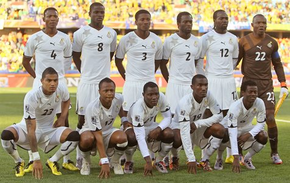

A Seleção de Gana já participou três vezes da Copa do Mundo (2006, 2010, 2014). Em 2022 Fará sua 4° participação na edição que será no Qatar
É uma das maiores forças do futebol africano. Venceu quatro vezes a Copa das Nações Africanas em 1963, 1965, 1978 e 1982 e foi quatro vezes vice-campeão em 1968, 1970, 1992 e 2010. Venceu cinco vezes a Copa da África Ocidental em 1982, 1983, 1984, 1986 e 1987.
| Data/Hora | Estádio | Adversário |
|---|---|---|
| 24 nov 2022 / 13h00 | Estádio 974 (Estádio Ras Abu Aboud) | Portugal |
| 28 nov 2022 / 10h00 | Estádio da Cidade da Educação | Coreia do Sul |
| 2 dez 2022 / 12h00 | Estádio Al Janoub | Uruguai |